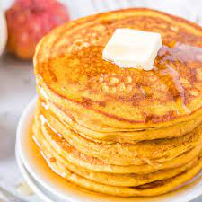

Pumpkin Pancakes

Pumpkin pancakes are good in any season but are perfect to warm you up on cold winter mornings.
You can use either canned or cooked fresh pumpkin.
Ingredients
- 1 ½ cups milk
- 1 cup pumpkin puree
- 1 large egg
- 2 tablespoons vegetable oil
- 2 tablespoons vinegar
- 1 teaspoon baking soda
- 1 teaspoon ground allspice
- 1 teaspoon ground cinnamon
- ½ teaspoon ground ginger
- ½ teaspoon salt
- cooking spray